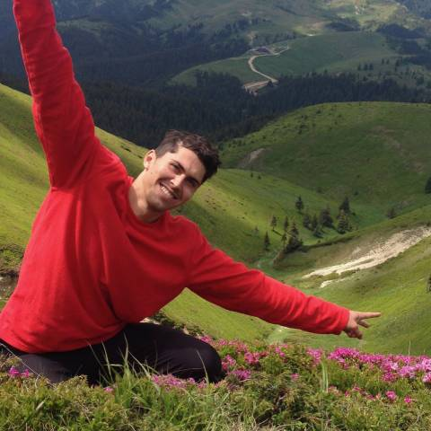
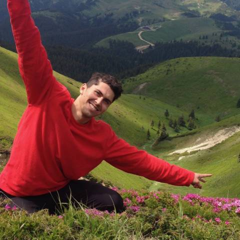

Salut! Sunt Mihai Cristea si vreau sa ne cunoastem mai bine, mai ales prin intermediul drumetiilor!
Mie îmi vine foarte lejer să organizez drumeții, pentru că asta e o activitate care îmi place foarte mult! Mai ales când știu că nu mă bucur doar eu de aceste minunate locuri din Carpații Românești.
Sunt fondatorul comunitatii in drumetie
Am absolvit Facultatea de Geografie și am obținut în paralel și atestatul de Ghid de turism, Ghid Național și ultima specializare, cea de Ghid Montan. Am scris trei cărți până acum: Fabrica de sclavi – Ceea ce școala nu te învață niciodată; Pași înspre necunoscut și Ingrediente pentru o drumeție reușită – ghid de buzunar.
Mai mult → 
